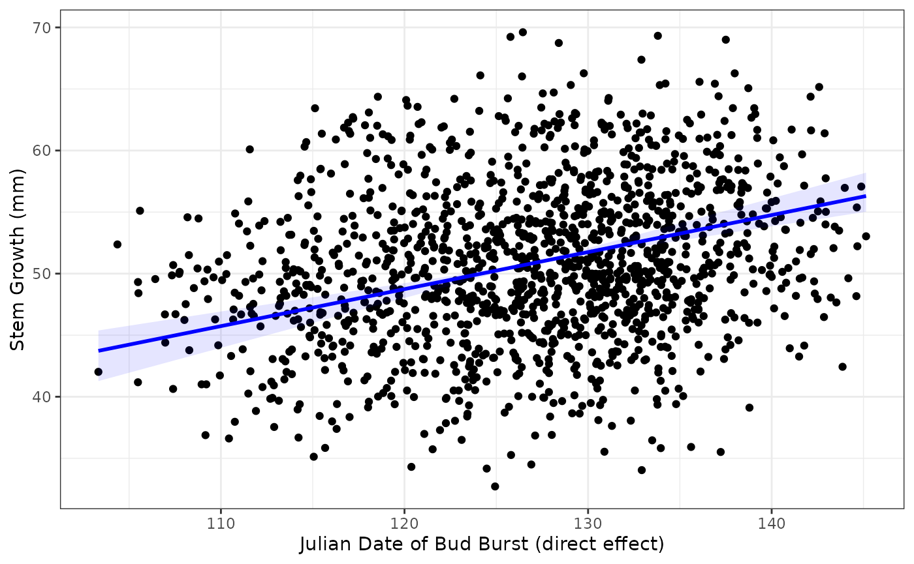
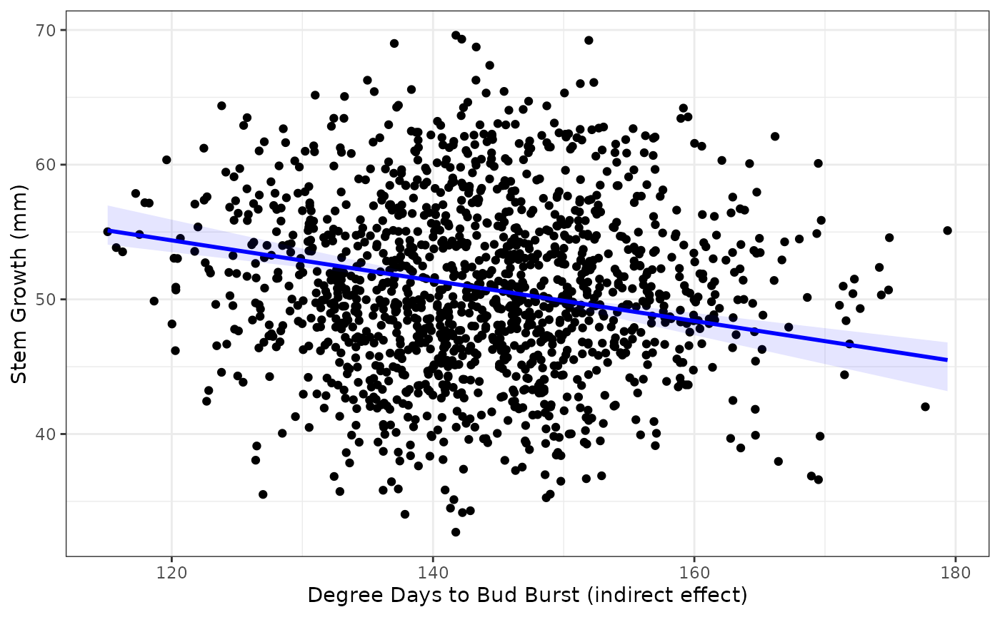

semEff can be used to predict values for different types of effects in an SEM. For example, we may be interested in the predictions of an indirect effect of a variable vs. its direct effect, or we may simply wish to predict the total (combined) effect. Here we’ll use simulated data from Shipley (2009) on tree growth and survival for a single tree species to predict and plot a direct vs. indirect effect.
Let’s preview the data (n = 1900):
| site | tree | lat | year | Date | DD | Growth | Survival | Live |
|---|---|---|---|---|---|---|---|---|
| 1 | 1 | 40.38063 | 1970 | 115.4956 | 160.5703 | 61.36852 | 0.9996238 | 1 |
| 1 | 2 | 40.38063 | 1970 | 118.4959 | 158.9896 | 43.77182 | 0.8433521 | 1 |
| 1 | 3 | 40.38063 | 1970 | 115.8836 | 159.9262 | 44.74663 | 0.9441110 | 1 |
| 1 | 4 | 40.38063 | 1970 | 110.9889 | 161.1282 | 48.20004 | 0.9568525 | 1 |
| 1 | 5 | 40.38063 | 1970 | 120.9946 | 157.3778 | 50.02237 | 0.9759584 | 1 |
| 1 | 1 | 40.38063 | 1972 | 114.2315 | 160.6120 | 56.29615 | 0.9983398 | 1 |
Tree measurements are taken for five individuals of the same species at 20 different sites every two years from 1970 to 2006 (repeated measures). The hypothesised SEM from Shipley (2009) tests the indirect effect of site latitude on tree survival (0/1), via degree days to bud burst, date of first bud burst, and tree growth. This can be fit as a series of linear and generalised linear mixed models using the lme4 package:
shipley.sem <- list(
DD = lme4::lmer(DD ~ lat + (1 | site) + (1 | tree), data = shipley),
Date = lme4::lmer(Date ~ DD + (1 | site) + (1 | tree), data = shipley),
Growth = lme4::lmer(Growth ~ Date + (1 | site) + (1 | tree), data = shipley),
Live = lme4::glmer(Live ~ Growth + (1 | site) + (1 | tree), data = shipley,
family = binomial)
)We can bootstrap estimates for these models:
shipley.sem.boot <- bootEff(shipley.sem, R = 1000, seed = 13, ran.eff = "site")And use the bootstrap samples to calculate effects and confidence intervals:
(shipley.sem.eff <- semEff(shipley.sem.boot))
#>
#> Piecewise SEM with:
#> * 1 exogenous vs. 4 endogenous variable(s)
#> * 4 direct vs. 6 indirect effect(s)
#>
#> Variables:
#> Category Predictor Mediator Response Dir. Eff. Ind. Eff.
#> -------- --------- -------- -------- --------- ---------
#> lat | Exog. | Y N N | - - |
#> DD | Endog. | Y Y Y | 1 0 |
#> Date | Endog. | Y Y Y | 1 1 |
#> Growth | Endog. | Y Y Y | 1 2 |
#> Live | Endog. | N N Y | 1 3 |
#>
#> Use summary() for effects and confidence intervals for endogenous variables.For this example, let’s compare the direct effects of Date (Julian date of first bud burst) vs. the indirect effects of DD (cumulative degree days to first bud burst, °C) on tree Growth (increase in stem diameter, mm):
summary(shipley.sem.eff, "Growth")
#>
#> SEM direct, summed indirect, total, and mediator effects:
#>
#> Growth (3/4):
#> Effect Bias Std. Err. Lower CI Upper CI
#> ------ ------ --------- -------- --------
#> DIRECT Date | 0.382 | 0.011 | 0.058 | 0.293 0.515 | *
#>
#> INDIRECT lat | 0.165 | 0.001 | 0.048 | 0.086 0.281 | *
#> DD | -0.240 | -0.007 | 0.042 | -0.344 -0.181 | *
#>
#> TOTAL lat | 0.165 | 0.001 | 0.048 | 0.086 0.281 | *
#> DD | -0.240 | -0.007 | 0.042 | -0.344 -0.181 | *
#> Date | 0.382 | 0.011 | 0.058 | 0.293 0.515 | *
#>
#> MEDIATORS DD | 0.165 | 0.001 | 0.048 | 0.086 0.281 | *
#> Date | -0.075 | -0.006 | 0.017 | -0.109 -0.049 | *We’ll extract the (total) effects of each variable to use for prediction:
tot <- getTotEff(shipley.sem.eff, "Growth")
tot.b <- getTotEff(shipley.sem.eff, "Growth", type = "boot")Now we can predict values for Growth using predEff(). We’ll need the model object, and we’ll generate 100 values of the predictors to predict from:
dat <- na.omit(shipley)
mod <- shipley.sem$Growth
fit <- sapply(c("Date", "DD"), function(i) {
x <- data.frame(seq(min(dat[i]), max(dat[i]), length = 100)); names(x) <- i
f <- predEff(mod, newdata = x, effects = tot[i], eff.boot = tot.b)
c(x, f)
}, simplify = FALSE)OK let’s plot the predictions. We’ll use a custom plotting function which wraps ggplot2::ggplot():
plotFit <- function(x, y, fit, x.lab = NULL, y.lab = NULL) {
d <- fit[[1]]
f <- fit$fit
ci.l <- fit$ci.lower
ci.u <- fit$ci.upper
ggplot () +
geom_point(aes(x, y)) +
geom_ribbon(aes(d, ymin = ci.l, ymax = ci.u, alpha = "0.15"), fill = "blue") +
geom_line(aes(d, f), color = "blue", size = 1) +
xlab(x.lab) +
ylab(y.lab) +
theme_bw() +
theme(legend.position = "none")
}Effects of Date (direct):
plotFit(x = dat$Date, y = dat$Growth, fit = fit$Date,
x.lab = "Julian Date of Bud Burst (direct effect)", y.lab = "Stem Growth (mm)")
Effects of DD (indirect, via Date):
plotFit(x = dat$DD, y = dat$Growth, fit = fit$DD,
x.lab = "Degree Days to Bud Burst (indirect effect)", y.lab = "Stem Growth (mm)")
We can see that the effects are in opposite directions: positive for Date (direct) and negative for DD (indirect). This is because trees at higher latitudes require fewer degree days to break buds (cooler climate), break buds later, and grow more in the growing season than trees at lower latitudes. Thus DD negatively affects Growth by reducing the Date to first bud burst. This is just a toy example from the SEM to illustrate contrasting effects of similar magnitude. DD in this case is acting as a proxy for latitude (high DD = low latitude).
It’s also evident from the plots that there is a huge amount of scatter around the fits. This is due to the random effects (‘site’ and ‘tree’) accounting for most variation in tree growth. We can get a rough breakdown of this using R-squared, here via R2() (squared multiple correlation):
c(r2_marg = R2(mod, re.form = NA)[[1]],
r2_cond = R2(mod)[[1]])
#> r2_marg r2_cond
#> 0.04814953 0.79383672Fixed (‘marginal’) effects account for only about 5% of variation, compared to almost 80% when adding all random effects (‘conditional’). We can also condition on individual random effects, showing that ‘tree’ accounts for most random variation:
c(r2_site = R2(mod, re.form = ~ 1 | site)[[1]],
r2_tree = R2(mod, re.form = ~ 1 | tree)[[1]])
#> r2_site r2_tree
#> 0.3081469 0.6068561Shipley, Bill. 2009. “Confirmatory Path Analysis in a Generalized Multilevel Context.” Ecology 90 (2): 363–68. https://doi.org/10/bqd43d.